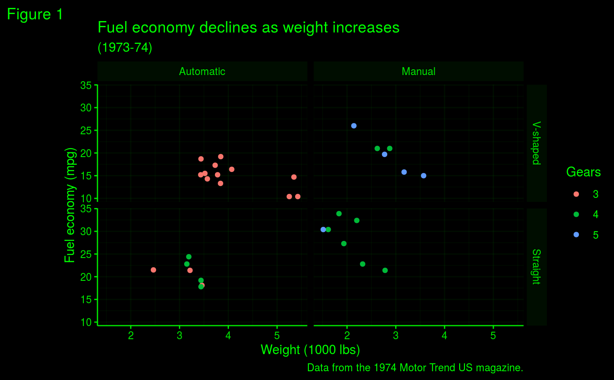

This theme makes all background elements black and all foreground elements a colour of choice. Intermediate elements, such as strip backgrounds and grid lines are set to a very transparent version of the foreground color.
theme_black( base_size = 11, base_family = "", base_line_size = base_size/22, base_rect_size = base_size/22, base_colour = "white" )
| base_size | base font size, given in pts. |
|---|---|
| base_family | base font family |
| base_line_size | base size for line elements |
| base_rect_size | base size for rect elements |
| base_colour | base colour for foreground elements |
A theme object that can be added to a plot.
mtcars2 <- within(mtcars, { vs <- factor(vs, labels = c("V-shaped", "Straight")) am <- factor(am, labels = c("Automatic", "Manual")) cyl <- factor(cyl) gear <- factor(gear) }) p <- ggplot(mtcars2) + geom_point(aes(x = wt, y = mpg, colour = gear)) + labs( title = "Fuel economy declines as weight increases", subtitle = "(1973-74)", caption = "Data from the 1974 Motor Trend US magazine.", tag = "Figure 1", x = "Weight (1000 lbs)", y = "Fuel economy (mpg)", colour = "Gears" ) + facet_grid(vs ~ am) p + theme_black()# Oscilloscope / Radar version p + theme_black(base_colour = "green")# Red alert version p + theme_black(base_colour = "red")